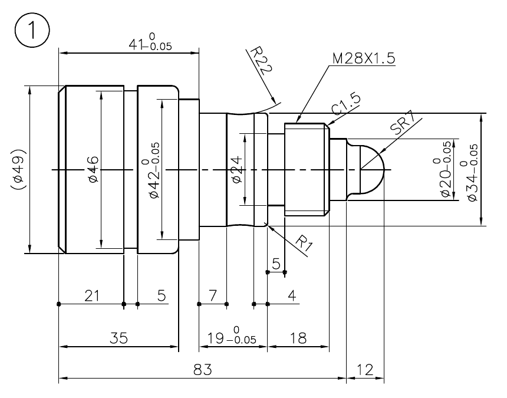
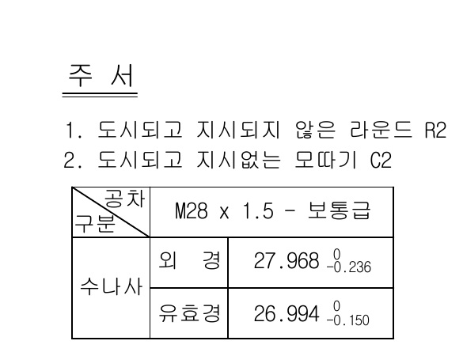

실기 공개도면 1번 · 공작물 확대원본 도면 PDF ↗왼쪽 아래 공작물주서공작물과 주서를 각각 별도 이미지로 잘라 표시합니다. 전체 도면은 원본 PDF에서 확인할 수 있습니다.
프로그램 작성 및 모범답안공개도면 1번도면을 보며 먼저 작성한 뒤 모범답안을 펼쳐 비교하세요. 답안은 공개도면 번호별로 저장됩니다.후면가공 프로그램 작성전면가공 프로그램 작성이 도면 모범답안 보기이 도면의 모범답안은 아직 등록되지 않았습니다. 공작물 도면을 보고 직접 작성해 보세요.